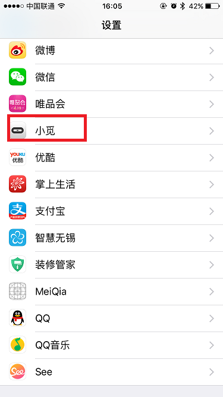
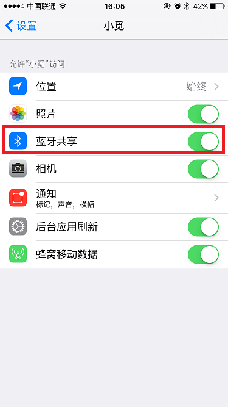
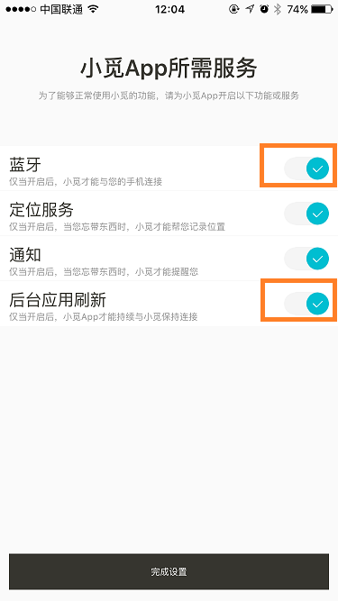
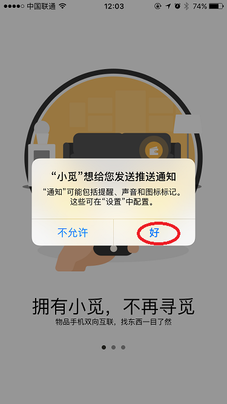

按照苹果公司的系统更新要求，只要您是iPhone 4s及之后的机型，并且iOS系统版本在iOS7及以上版本即可支持
在原则上只要Android系统版本在Android 4.4.4及以上，且手机带蓝牙4.0即可支持。由于Android设备繁多，且差异较大，请参照我们的手机兼容列表，我们会不断地测试并增加支持及不支持的手机列表。如果您的手机不在列表中，我们将不能保证与我们所列出的支持的手机拥有同样的体验。
2012年后的MacBook, iMac以及Mac Pro，系统版本是OS X 10.9及以上版本将可支持。
Windows系统版本在Windows 8.1及上版本，且自带蓝牙4.0芯片的电脑即可支持。
使您常用的扫码软件，扫描包装盒后的二维码，或者手动输入下面的链接即可按照提示进行操作即可顺利完成App安装。App安装链接：https://www.slightech.com/download/mynt
通过您的手机、平板电脑、PC的浏览器访问网址：https://mynt.slightech.com/cn，根据自己的设备类型点击相应的按钮，即可安装。
在应用商店中搜索“小觅”，开发商为“Slightech, Inc.”或者“轻客智能科技（江苏）有限公司”。
防丢功能仅可与手机等随身设备连接来使用。小觅通过与手机的低功耗蓝牙以BLE模式保持连接。由于蓝牙是一种低功耗的、短距离连接方式，因此，当蓝牙断开时，手机以及小觅都可以通过报警的方式提醒您忘带手机或者其它装有小觅的物品。蓝牙是一种高频通信(2.4GHz)协议，因此受环境变化的影响较大，通俗的说，就是穿透性较差，墙、人体对蓝牙信号的阻挡非常明显。我们独有的算法能够基本保证手机以及小觅均不会误报。您可以放心使用.
小觅与手机、平板电脑、Mac、PC等设备通过蓝牙4.0的BLE模式连接，并通过HID(Human Interface Device)协议进行相应的控制。小觅可以相当于您的设备外接了一个键盘，并通过键盘进行控制您的设备。由于采用标准的HID协议，因此，小觅支持的设备以及App极为广泛。以iOS为例，小觅支持所有支持通过问音量键进行充当快门键的App，支持所有支持线控控制的音乐App等。
如果您希望使用小觅的防丢功能，以及找手机的功能，如：比如当您在餐厅吃饭，出门忘带钱包时，我们的小觅就会通过手机报警的方式提醒您，但是您需要保持手机蓝牙一直为开启状态。
对于iOS设备，需要开启应用后台刷新功能，设置位置为“设置>小觅应用>应用后台刷新”，以及在设置中为小觅App开启“蓝牙共享”，设置方式为，打开“设置App”，一直滑到最下面的所有已安装应用程序的权限设置总览部分，找到“小觅”App，点击后即可看到小觅App的所有权限设置，并可直接设置。如下图所示：
 此外，也可通过在APP安装的时候在弹出的提示框中开启权限：
对于Android设备，则需要根据自己的手机以安装的手机管家以及后台清理程序进行相应的设置，以保证小觅App能够在后台正常工作。具体的设置方式，请参考小觅App>设置中点击“应用运行环境检测”中的说明。
iOS以及Android 6.0以后的设备都均可对应用的通知进行管理，小觅App需要您为它开启完整的通知权限，才能在您丢失物品，或者其它用户帮你找到您的物品时提醒您。对于iOS通知开启设置位置为“设置>小觅应用>通知”，且并确保安装时允许推送通知消息，如下：
如果您希望当您丢失物品时，小觅通过帮您定位，在哪里丢失。或者当您设置小觅为汽车模式希望小觅通过帮您记录停车位置时，请为小觅App开启定位服务。如果您只是希望小觅作为一个摇控器使用，您可以关闭该权限。定位服务开启方式参照开启通知权限方法。 蓝牙常开是否会增加耗电？
由于小觅采用的是低功耗蓝牙技术，功耗仅仅只有微安级，因此对于手机的续航影响几乎可以完全忽略不计。这也是蓝牙防丢器产品诞生的基本技术前提。因此，您可以非常放心地一直开着蓝牙。
小觅App仅在小觅与手机蓝牙断开时才会启动定位功能，因此，启动该服务对于电池续航的影响非常小，在我们的实测中，开启定位服务后，仅会增加1~2%的耗电量。因此，如果您期望使用小觅的防丢功能，建议为小觅App开启定位服务权限。
首先在您的手机或者平板电脑上，在小觅与它们保持着连接的情况下，切换到您希望在电脑上使用的功能，如PPT翻页，或者音乐摇控。
然后在手机或者平板电脑上断开与小觅的连接，可以在主界面上通过长按小觅在弹出的功能菜单中选择“断开连接”，或在该小觅的设置页面中，点击“断开连接”按钮。
PS：对于iOS设备，需要在设置>蓝牙>我的设备中选择已连接的MYNT进行“忽略该设备”，才能与您的Mac / Windows电脑连接。
Tips：如果您只有一个小觅，或者在您使用与PC连接的功能时，暂时不需要使用其它小觅，您可以通过直接关闭手机/平板电脑的蓝牙，然后直接通过Mac / Windows扫描添加蓝牙设备，添加您需要绑定的小觅，即可通过小觅对音乐，PPT等进行摇控。使用完后，只需要从Mac / Windows蓝牙设备中删除/忽略这个正在使用的小觅，再开启手机蓝牙，小觅就会自动地与手机重新连接。
后续当我们完成了Mac以及Windows版App的开发，您将可以直接在电脑上进行模式切换，使用将更加方便。
由于小觅本身并不带GPS以及GSM芯片，所以，小觅本身并不能定位，主要是依靠与之连接的手机进行定位，这也是为什么小觅能够做到如此之薄，并可有如此之高的待机时间的原因。当小觅与手机等设备之间的蓝牙连接断开后，小觅将持续进行广播。如果您在手机端报丢，其它使用小觅App的用户经过您报丢的小觅附近(理论上50米左右的范围，而实际上环境以及您手机的蓝牙信号不同时，距离也会有所偏差)时，将能够接收到您的小觅的信号，并匿名地将位置信息上传到服务器端，服务器端会即时地把最新被发现的位置推送给您
由于小觅拥有超长的待机时间，而我们期望能够给大家的体会是装上它，忘掉它，仅在您需要时，才会提醒您。我们非常不希望给您带来开和关的操作烦恼，所以，小觅是不能关闭的，当您拿到全新的小觅并拔掉蓝色的塑料绝缘垫片后，小觅就会一直工作。
理论上一个手机可以同时绑定8个蓝牙设备，因此，您可以绑定8个小觅。但是，不同的手机蓝牙芯片的性能以及蓝牙性能有较大的差距。在绑定过多的小觅后，容易出现问题。在我们的广泛测试中，一般iPhone可绑定4~5个小觅，并可非常正常、稳定地使用。 Android手机，会出现非常大的差异，一般绑定3~4个小觅能够稳定地使用。
您可以将小觅转赠他人。在转赠前，您需要从你绑定过的手机上删除该小觅。
小觅本身具体基本的生活防水能力，即偶尔有些水泼溅到小觅上是没有问题的。因此，您可以放心地把小觅放到钱包里，挂到钥匙上。如果您需要将小觅放到您的宠物身上，我们强烈建议您购买我们的防水套，经过我们实际测试，在安装防水套后，将小觅放到水杯中一直浸泡，也能正常工作。
PS：安装防水套后，将堵住小觅的出音口，声音将变得非常小。因此，也仅仅建议将小觅给小孩、宠物使用。而小觅作为防丢器，可以有效的防止在出门时，小孩或宠物跑远而未意识到造成丢失，以及丢失后帮助寻回的措施之一。
当小觅已与手机连接成功，App中的小觅图标为变成彩色，而当小觅断开或者没有连接成功时，图标会显示为灰色.
点击小觅上的按钮，如果按钮上的灯快速地闪一下，说明已与设备连接成功。如果按钮上的灯是相对较慢地闪两下，则说明手机已与设备断开。
蓝色绝缘片未拔出小觅是无法工作的，请务必确认您的小觅设备已拔掉蓝色绝缘片
请确认新的手机、平板电脑、PC、Mac等设备的蓝牙已开启
小觅支持的设备以及系统的基本要求为：iOS7及以上，Android系统需要在Android 4.4.4及以上，Windows系统在Windows 8.1及以上，且自带蓝牙4.0及以上芯片，Mac OS X需要在OS X 10.9及以上，且Mac是在2012年后生产的（2012年后的Mac才支持蓝牙4.0）。
请把蓝牙关闭后，再次开启
请取出小觅电池，再重新安装上去，以重启小觅。
请检查固件是否更新，需在小觅APP中，划动左侧栏进入左侧栏页面>点击所绑定的小觅>进入小觅设置页面>点击“更新固件”完成固件固件更新。
固件版本为24以下版本的小觅在连接iOS设备时，系统会弹出对话框，询问是否配对。此时如果您点击的是取消，或者在20秒内未点击(或者您在应用切换时错过了该提醒)，此时小觅会显示为已连接，但是很多功能都不工作。您可采取如下操作解决问题：
双击Home键，在多任务管理界面，向上滑出小觅App卡片，然后重新启动小觅App，此时稍等片刻，系统应该会重新弹出要求配对的对话框，点击“配对”即可。
如果不行，可重启手机后，再重新启动小觅App，系统也会弹出请求配对的对话框。还有一种办法是，在App中删除此小觅，并重新添加它即可。
为了能够让小觅为大家提供更多多的功能，我们提供了多种工作模式，如：“默认”、“音乐”、“拍照”、“自定义” 等（默认模式适用于固件版本在24版本以上的小觅，24版本以下的小觅没有这个模式）。当从默认切换到其它模式，如“音乐”或“拍照”等非自定义模式时，长按小觅将不会让手机响，以找到手机。这些模式是互斥的，切换后，只能当前的模式下工作。因此，在工作模式切换后，如果需要经常使用找到手机功能，请切换回默认模式。或者您根据自己的使用喜好自定义的模式。
目前，我们的小觅的遥控功能是走系统层的，也就是只要您的手机的蓝牙已与小觅配对，且之前设置了音乐/相机模式，则不管您的设备是删除还是断开连接，您的小觅仍可进行遥控音乐/相机。所以，当您遇到这种情况时，请检查系统中的蓝牙设备中有无配对的小觅，如果有，小觅能遥控音乐/相机是正常的，如果您不想它遥控音乐/相机，可取消配对。
对于iOS设备，在删除小觅的同时，系统中蓝牙与小觅的配对不会自动取消，所以需手动取消手机蓝牙与小觅的配对， 而对于Android设备，在删除小觅的通知，会自动取消系统蓝牙与小觅的配对，不需要手动取消。
首先确定您的小觅是否真正的连接成功，可通过点击小觅上的按键来确定，如果按钮上的灯快速地闪一下，说明已与设备连接成功。如果按钮上的灯是相对较慢地闪两下，则说明手机已与设备断开。
如果您是首次绑定小觅，请停止铃铛闪烁，再次点击小觅图标，重新唤醒小觅响铃。一般情况下，第一次绑定的小觅在唤醒铃铛时会有一定的延时，比较慢些。建议您如果唤醒响铃时间比较长时，请尝试再次唤起响铃。